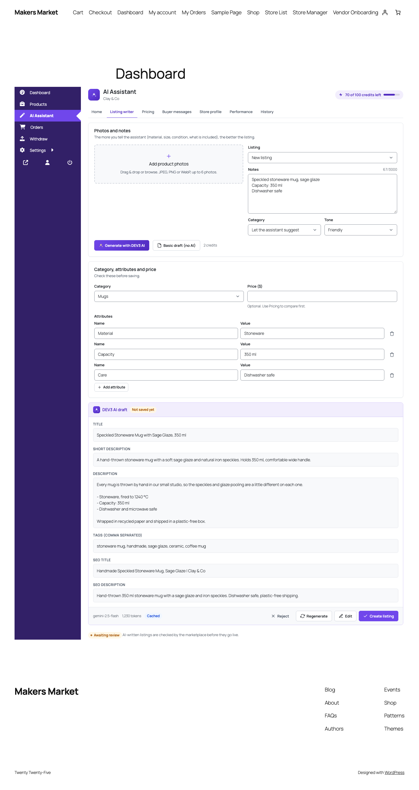
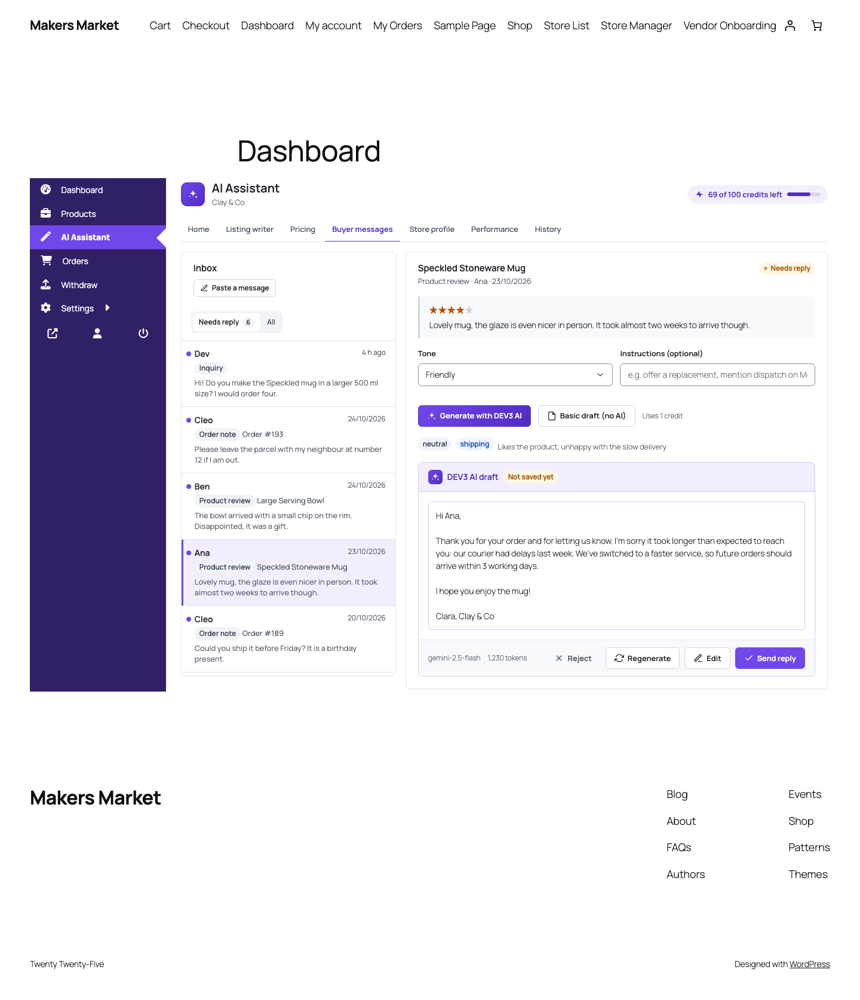
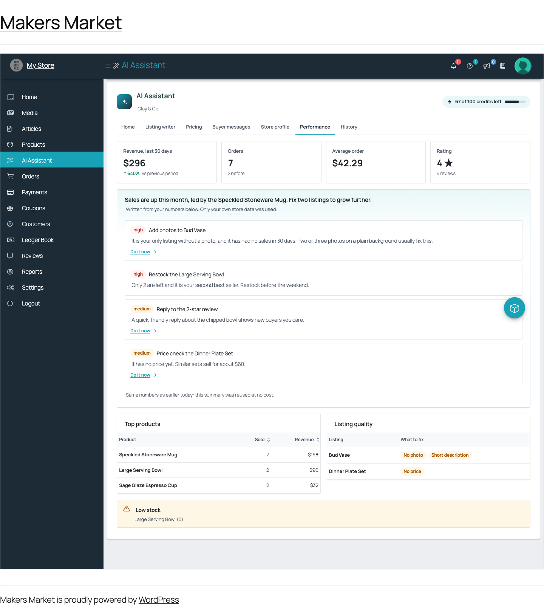
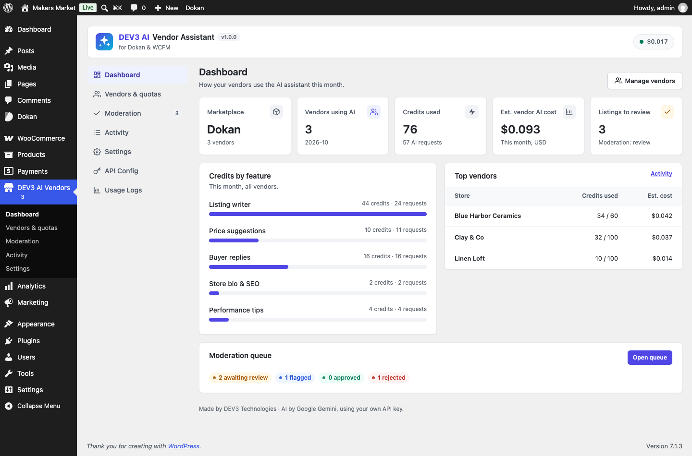
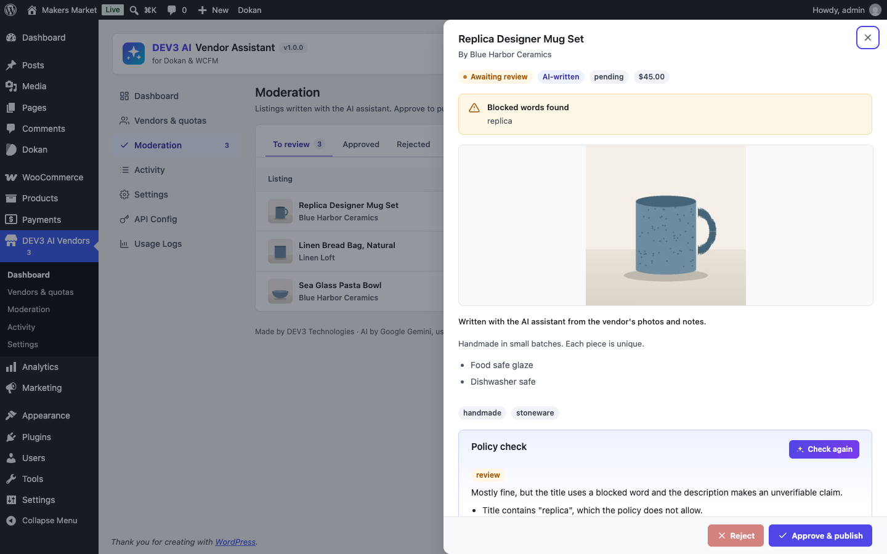
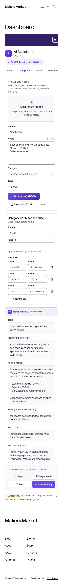

Install
- Requirements: WordPress 6.0+, PHP 7.4+ (tested on 8.3), WooCommerce 8+, and Dokan (Lite or Pro) or WCFM Frontend Manager + WCFM Marketplace (free or Ultimate).
- Plugins → Add New → Upload Plugin → choose
dev3-ai-vendor-assistant.zip→ Install → Activate. - Open DEV3 AI Vendors in wp-admin. The dashboard shows which marketplace was detected.
- Vendors now see AI Assistant in their dashboard menu (Dokan:
/dashboard/ai-assistant/, WCFM:/store-manager/ai-assistant/). If the page shows "not found", visit Settings → Permalinks once and click Save. - Optional: put the assistant on any page with the shortcode
[dev3va_vendor_assistant].
No licence key or activation is needed. The plugin is fully usable without an AI key: every feature has a basic (non-AI) helper.
Connect Google Gemini
- Create a key at Google AI Studio.
- DEV3 AI Vendors → API Config → paste the key → Save. Or add
define( 'DEV3VA_GEMINI_API_KEY', '…' );towp-config.php. - Pick the models (default
gemini-2.5-flash), and set a monthly budget in USD for the whole site. When it is reached, AI pauses and vendors keep using the basic helpers.
The key stays on your server. Vendors' browsers only talk to your WordPress REST API.
For vendors
The assistant opens inside the vendor dashboard and uses the marketplace's own colours (Dokan's theme colour, WCFM's highlight colour). It has tabs for Home, Listing writer, Pricing, Buyer messages, Store profile, Performance and History. The credits pill at the top shows how many AI credits are left this month. Every result is a draft: the vendor reviews, edits, accepts or rejects it; nothing changes until they click.
Shortcut links appear on the Dokan product edit form and in the WCFM product manager: "Improve this listing with AI" and "Suggest a price".
Listing writer
- Upload up to 6 photos (JPEG, PNG, WebP, 8 MB each) and type a few notes. Lines like
Capacity: 350 mlbecome attributes. - DEV3 AI looks at the photos and notes and writes a title, short description, description, tags, attributes, category, SEO title/description and alt text for each photo.
- Pick "New listing" or one of your products to improve it (a diff shows what changes).
- Create listing makes a WooCommerce product owned by the vendor, with the photos as featured image and gallery. With moderation on, AI-written listings wait for review.
Price suggestions
The assistant collects similar published listings from the marketplace (same category, similar title, price above zero) and shows the count, lowest, median and highest price and the list itself. Only public data is used: title, price, rating and store name, never sales numbers. Choose a goal (competitive, premium, quick sale). DEV3 AI suggests a price, a range and a reason; the server keeps it within 0.5× the lowest and 1.5× the highest comparable price. Apply price sets the regular price of the vendor's product.
Buyer replies
One inbox for: product reviews on the vendor's products, notes buyers left on orders, WCFM inquiries, and Dokan Pro store-support topics. Pick a message, choose a tone, add instructions if you like, and get a reply draft that follows the marketplace's and the vendor's policies. Send reply writes it back to the right place: a reply under the review, a customer note on the order (WooCommerce emails it), the WCFM inquiry reply (with email), or a support-topic comment. "Paste a message" drafts a reply for emails and chats; it is copied, not sent.
Store bio & SEO
From the store name, categories, best products and the vendor's notes, DEV3 AI writes a bio, tagline, SEO title, SEO description and keywords. Saving writes into the marketplace's own fields: Dokan vendor_biography and store_seo (the keys Dokan Pro uses; with Dokan Lite the plugin prints the bio and SEO tags on the store page), WCFM store description and store SEO. Vendors also keep their own reply policies here.
Performance tips
Last 30 days vs the 30 before, from the vendor's own orders: revenue, orders, average order, rating, top products, listing quality (no photo, short description, no price, no category), low stock and unanswered reviews. Rule-based tips always show; Summarize with DEV3 AI turns the numbers into a short, prioritised plan (cached for the day).
Admin screens
| Screen | What it does |
|---|---|
| Dashboard | Marketplace detected, vendors using AI, credits and estimated cost this month, credits by feature, top vendors, moderation counts. |
| Vendors & quotas | Every vendor with access, credits used/limit and cost. Edit a vendor: access on/off, custom monthly credits, per-feature override (default / on / off). |
| Moderation | AI-written listings to review, approved and rejected. Preview, run a DEV3 AI policy check, approve & publish, or reject with a note (emailed to the vendor and shown in their History). |
| Activity | The vendor AI ledger: every request with store, user, feature, credits, tokens, estimated cost and result. Filter by feature and month; export CSV. |
| Settings | Marketplace, vendor menu label/position, DEV3 name shown to vendors, features, credits and weights, moderation, blocked words, policies, tone, language, photos, comparables, low-stock threshold. |
| API Config / Usage Logs | Gemini key, models, monthly budget, AI on/off, cache, PII masking; all AI requests with tokens and cost. |
Quotas and the ledger
- Each vendor gets a number of credits per month (default 100; 0 = unlimited). Override it per vendor.
- Each AI request costs credits by feature (listing 2, others 1; editable in Settings or with the
dev3va_feature_creditsfilter). Cached answers and basic drafts cost nothing. - When a vendor runs out, AI requests return "Your monthly AI credits are used up"; drafting features switch to the basic helper automatically. Credits reset on the 1st of the month (UTC).
- Staff (Dokan Pro vendor staff, WCFM Ultimate shop staff) use their vendor's credits.
Moderation
- Hold for review (default): AI-written listings are saved as pending until an admin approves them.
- Publish, but list for review: they publish with the marketplace's normal status and appear in the queue as flagged.
- Blocked words: listings containing them are flagged, or the vendor cannot save them (setting).
- Basic (non-AI) listings follow the marketplace's own rules.
Privacy and data isolation
- Every vendor route needs a logged-in vendor (or their staff) and a valid nonce, checks the feature switch, and verifies ownership of every product, photo, order, message and draft. Other stores' ids return 404.
- Only the fields a feature needs are sent to Google Gemini. Buyers are reduced to their first name; emails and addresses are never sent. PII masking (API Config) applies to every prompt.
- The privacy-policy helper names Google Gemini as processor. WordPress's personal-data export/erase tools include the vendor ledger and drafts.
Without AI
With no key, AI turned off, the budget reached or a vendor's credits used up, the plugin still works: listings are drafted from the notes, prices come from the comparables' median/quartiles, replies use intent templates, store profiles use a template, and performance tips come from rules.
Hooks for developers
| Hook | Type | Use |
|---|---|---|
dev3va_marketplace_adapters | filter | Add an adapter (extend Dev3\AiVendorAssistant\Marketplace\Adapter) for another marketplace. |
dev3va_message_sources | filter | Add a buyer-message source (extend Messages\Source). |
dev3va_current_vendor | filter | Map a user to a vendor id. |
dev3va_vendor_feature_enabled | filter | Final say on a feature for a vendor. |
dev3va_vendor_credit_limit, dev3va_feature_credits | filter | Monthly credits and per-request cost. |
dev3va_vendor_rate_limit | filter | Vendor POST requests per minute (default 30). |
dev3va_insights_paid_statuses | filter | Order statuses counted as sales. |
dev3va_dokan_support_store_meta | filter | Meta key of the Dokan Pro support topic's store. |
dev3va_prompt_va_listing (…va_price, va_reply, va_profile, va_insights, va_moderation) | filter | Change a prompt template or schema. |
dev3va_listing_applied | action | After a vendor saved a listing (product id, vendor, fields, moderation state). |
dev3va_listing_moderated | action | After an admin approved or rejected a listing. |
dev3va_reply_sent | action | After a vendor sent a buyer reply. |
dev3va_dokan_profile_saved, dev3va_wcfm_profile_saved | action | After store profile fields were saved. |
dev3va_ai_guard | filter | Block any AI task (return a WP_Error). |
REST API under /wp-json/dev3va/v1/: vendor/* for vendors (me, products, photos, listing/draft, listing/apply, price, price/apply, messages, messages/draft, messages/send, profile, profile/draft, profile/apply, insights, insights/ai, history, drafts/<id>/reject) and admin/* for administrators (overview, vendors, vendors/<id>, ledger, moderation, moderation/<id>, moderation/<id>/check).
FAQ
Does it work with Dokan Pro and WCFM Ultimate?
Yes. It uses Dokan's and WCFM's documented hooks and data. Pro features it supports: Dokan Pro biography and store SEO fields, vendor staff and store-support topics; WCFM Ultimate shop staff.
Can vendors see each other's data?
No. Price comparisons use only public listing data (title, price, rating, store). Everything else (products, orders, messages, drafts, credits) is scoped to the vendor and covered by automated tests.
Who pays for the AI?
The marketplace owner's Gemini key is used. Control the cost with vendor credits and the monthly budget; the Activity screen shows the estimated cost per vendor.
Can I hide the DEV3 name from vendors?
Yes: Settings → "Show the DEV3 AI name to vendors" off. Buttons then say "Generate with AI", and you can rename the menu item.
The assistant page shows 404.
Save Settings → Permalinks once to refresh rewrite rules.
Changelog
1.0.0 · 2026-10-25
- Initial release: listing writer from photos, price suggestions, buyer replies, store bio/SEO, performance tips, per-vendor quotas and ledger, moderation with AI policy check, Dokan and WCFM support.